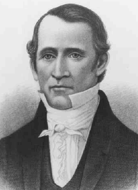

A temple 'in this generation', promised in 1832
ContestedLDS scholars have a real answer here. Say so before your friend does.
The prophecy
D&C 84:2-5, given in September 1832. A temple "shall be reared in this generation" on the dedicated lot at Independence, Missouri.
And "verily this generation shall not all pass away until an house shall be built unto the Lord."
What happened
No temple was ever built there. Every member of that generation is long dead.
Two related cases sit beside it. D&C 114:1 called David W.
Patten on a mission "next spring"; he was killed months before it. And there is the 1835 statement about the Second Coming in fifty-six years.
The test Christians apply
Deuteronomy 18:20-22. A prophet whose word "follow not, nor come to pass" has spoken presumptuously.
Jeremiah 28:9 and Ezekiel 33:33 are used the same way.
Their answer, at full strength
FAIR says biblical prophecy is often conditional without saying so. Jonah announced flatly that in forty days Nineveh would be overthrown.
It was not, and Jonah was no false prophet. And D&C 124:49-51, from 1841, canonises that principle: when enemies stop a commanded work, God "requires that work no more." The Saints were driven out of Jackson County in 1833.
Others read "an house" as the Kirtland temple of 1836.
How strong is this argument?
Genuinely arguable. The non-fulfilment is not in dispute, and the wording reads like a dated, unconditional oracle — Orson Pratt kept reaffirming it as one.
But the Jonah precedent is real, and the conditionality clause is inside their own canon. This turns on how you read prophecy, not on a disputed fact.
What to say
"How do you tell a conditional prophecy from one that just failed?"


How they answer this — at its strongest
Jonah said forty days and Nineveh stood. A word from God can carry a condition.
FAIR argues that prophecy in the Bible is often conditional without saying so. Jonah announced flatly that in forty days Nineveh would be overthrown. It was not, and Jonah was no false prophet.
D&C 124:49-51, from 1841, puts that principle into their own canon. When enemies stop a commanded work, God 'requires that work no more'. The Saints were violently driven out of Jackson County in 1833, which made the temple impossible.
Other readings take 'an house' in verse 5 as fulfilled by the Kirtland temple in 1836. Or they treat the words as an order rather than a flat forecast.
The verdict
Arguable both ways. It reads like a dated oracle, but D&C 124:49 sets a condition.
The non-fulfilment is not in dispute. And the formula 'this generation shall not all pass away' reads like a flat, dated oracle. Later leaders such as Orson Pratt kept restating it as one.
Yet the Jonah precedent is real, and the conditional clause at D&C 124:49 sits inside their own canon.
So this turns on how you read prophecy, not on a disputed fact.
Sources
- Pastor Unlikely — 41 Authentic Bible Verses to Contradict Mormonism
- Institute for Religious Research — Joseph Smith's Missouri Temple Prophecy
- Doctrine and Covenants 84, primary text
- FAIR — Alleged false prophecies of Joseph Smith